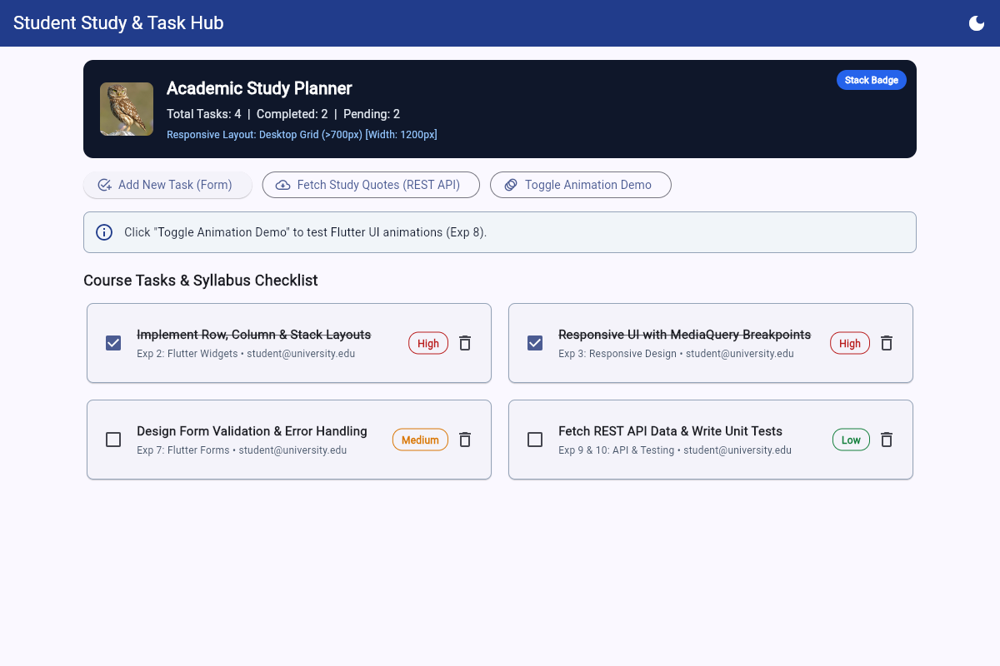
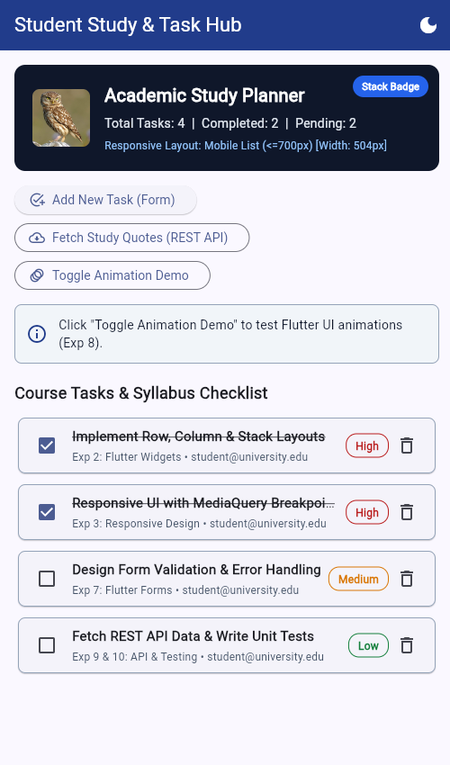
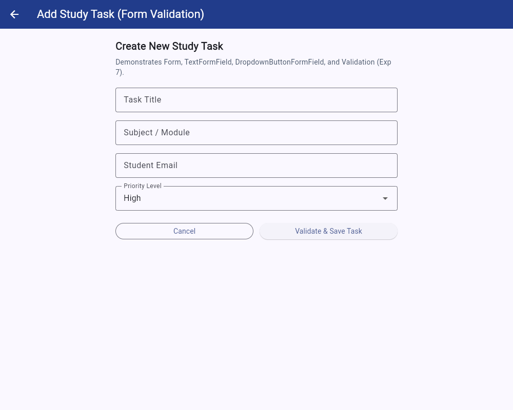
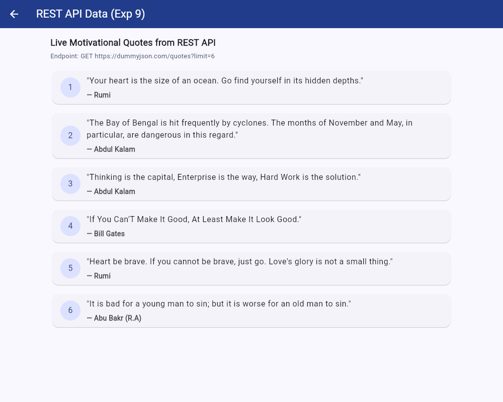

Project Title: Student Study & Task Hub
Student Name: Anish Katta | Roll No: 24XV1M7607 | Branch: CS AM
Live Deployed URL: https://nishulucyna.github.io/student_study_hub/
GitHub Repository: https://github.com/nishulucyna/student_study_hub
Application Name: Student Study & Task Hub
Introduction: Student Study & Task Hub is a clean, lightweight, cross-platform web and mobile application built using the Flutter framework and Dart programming language. It enables students to organize academic study tasks, track completion progress, validate task inputs through interactive forms, and fetch live motivational study quotes from a REST API. The application is architected to demonstrate all ten core laboratory experiments in the Flutter curriculum within a cohesive, easy-to-navigate user interface.
The primary purpose of the application is to provide students with a centralized academic task planner while demonstrating industry-standard Flutter development practices. The specific objectives are:
Text, Image, Container) and layout structures (Row, Column, Stack).MediaQuery and screen width breakpoints (700px) that dynamically switches between a multi-column desktop grid and a single-column mobile list.Navigator and named routes (/, /add-task, /api-quotes).StatefulWidget and setState) and global state management (Provider and ChangeNotifier).CustomTaskCard) and apply custom Light/Dark themes (ThemeData).Form, GlobalKey<FormState>, TextFormField, and DropdownButtonFormField.AnimationController, FadeTransition, SlideTransition, and AnimatedContainer).http package and FutureBuilder, and verify component reliability through automated unit and widget tests.| Category | Tool / Technology | Purpose in Project |
|---|---|---|
| Framework & SDK | Flutter SDK (Stable 3.x) | Cross-platform UI toolkit for building the responsive Web application. |
| Programming Language | Dart (SDK >=3.0.0 <4.0.0) | Object-oriented language used for UI components, state logic, and async API calls. |
| State Management | provider (^6.1.2) |
Reactive state management using ChangeNotifier and ChangeNotifierProvider. |
| Networking / API | http (^1.2.1) & dart:convert |
Performing HTTP GET requests and decoding JSON payloads from DummyJSON REST API. |
| Testing Framework | flutter_test |
Executing automated unit tests for TaskProvider and widget tests for UI & forms. |
| CI/CD & Hosting | GitHub Actions & GitHub Pages | Automated testing, release web build, and hosting on the gh-pages branch. |
| Exp | Syllabus Topic | Implementation in Student Study & Task Hub |
|---|---|---|
| Exp 1 | Flutter SDK & Dart Basics | Implemented lib/dart_basics.dart and the StudyTask model class demonstrating classes, constructors, lists, maps, functions, and null safety. |
| Exp 2 | Widgets & Layouts (Row, Column, Stack) | Dashboard header banner uses Stack with a positioned badge overlay, Container, Image.network, Row, Column, and Text widgets. |
| Exp 3 | Responsive UI & MediaQuery Breakpoints | Uses MediaQuery.of(context).size.width with a 700px breakpoint to switch between a 2-column GridView on desktop and a 1-column ListView on mobile. |
| Exp 4 | Navigation & Named Routes | Configured named routes (/, /add-task, /api-quotes) in MaterialApp and navigated via Navigator.pushNamed() and Navigator.pop(). |
| Exp 5 | Stateless/Stateful Widgets, setState & Provider | Global task list and theme state managed by TaskProvider (ChangeNotifier); local UI state for dropdowns and animation banner managed via setState(). |
| Exp 6 | Custom Widgets & Themes | Created reusable CustomTaskCard widget with priority color badges and configured custom Light and Dark ThemeData with Material 3 styling. |
| Exp 7 | Form Design, Validation & Error Handling | Built AddTaskScreen with GlobalKey<FormState>, three validated TextFormField inputs (Title, Subject, Email), and a DropdownButtonFormField. |
| Exp 8 | Flutter Animation Framework | Implemented explicit animations (AnimationController, FadeTransition, SlideTransition) and implicit animation (AnimatedContainer). |
| Exp 9 | Fetch Data from REST API | ApiQuotesScreen fetches JSON quotes from https://dummyjson.com/quotes?limit=6 using http.get and renders them with FutureBuilder. |
| Exp 10 | Unit Tests & Debugging | Created unit and widget tests in test/widget_test.dart and resolved a RenderFlex overflow in GridView using Flutter layout constraints. |
class TaskProvider extends ChangeNotifier {
final List<StudyTask> _tasks = [ /* Initial Tasks */ ];
List<StudyTask> get tasks => List.unmodifiable(_tasks);
void addTask({required String title, required String subject,
required String priority, required String email}) {
_tasks.insert(0, StudyTask(
id: DateTime.now().millisecondsSinceEpoch.toString(),
title: title, subject: subject, priority: priority, studentEmail: email,
));
notifyListeners();
}
void toggleTaskStatus(String id) {
final index = _tasks.indexWhere((t) => t.id == id);
if (index != -1) {
_tasks[index].isCompleted = !_tasks[index].isCompleted;
notifyListeners();
}
}
}
MaterialApp(
title: 'Student Study & Task Hub',
themeMode: taskProvider.isDarkMode ? ThemeMode.dark : ThemeMode.light,
theme: ThemeData(
useMaterial3: true,
colorScheme: ColorScheme.fromSeed(seedColor: const Color(0xFF1E3A8A)),
),
routes: {
'/': (context) => const HomeScreen(),
'/add-task': (context) => const AddTaskScreen(),
'/api-quotes': (context) => const ApiQuotesScreen(),
},
);
final double screenWidth = MediaQuery.of(context).size.width;
final bool isWideScreen = screenWidth > 700;
isWideScreen
? GridView.builder(
shrinkWrap: true,
gridDelegate: const SliverGridDelegateWithFixedCrossAxisCount(
crossAxisCount: 2, mainAxisExtent: 108, crossAxisSpacing: 12, mainAxisSpacing: 8,
),
itemCount: provider.tasks.length,
itemBuilder: (ctx, i) => CustomTaskCard(task: provider.tasks[i], ...),
)
: ListView.builder(
shrinkWrap: true,
itemCount: provider.tasks.length,
itemBuilder: (ctx, i) => CustomTaskCard(task: provider.tasks[i], ...),
);
final _formKey = GlobalKey<FormState>();
TextFormField(
controller: _emailController,
decoration: const InputDecoration(labelText: 'Student Email', border: OutlineInputBorder()),
validator: (value) {
if (value == null || value.trim().isEmpty) return 'Email address is required';
if (!value.contains('@') || !value.contains('.')) return 'Enter a valid email address';
return null;
},
);
void _submitForm() {
if (_formKey.currentState!.validate()) {
context.read<TaskProvider>().addTask(...);
Navigator.pop(context);
}
}
Future<List<Map<String, String>>> _fetchStudyQuotes() async {
final response = await http.get(Uri.parse('https://dummyjson.com/quotes?limit=6'));
if (response.statusCode == 200) {
final data = jsonDecode(response.body);
return (data['quotes'] as List).map((item) => {
'quote': item['quote'].toString(),
'author': item['author'].toString(),
}).toList();
}
throw Exception('Failed to load quotes');
}
The application is deployed to GitHub Pages using an automated GitHub Actions CI/CD workflow (.github/workflows/deploy.yml), following the exact deployment procedure used for the internal assessment:
main branch of the public GitHub repository (https://github.com/nishulucyna/student_study_hub).main, GitHub Actions provisions an ubuntu-latest runner, sets up Java 17 and Flutter Stable via subosito/flutter-action@v2, installs dependencies with flutter pub get, and executes automated unit and widget tests using flutter test.flutter build web --base-href "/student_study_hub/" --releaseJamesIves/github-pages-deploy-action@v4 action publishes the generated build/web folder to the gh-pages branch.|
 Fig 1: Desktop Home Grid (>700px)
|
 Fig 2: Mobile List (<=700px)
|
|
 Fig 3: Add Task Form (/add-task)
|
 Fig 4: REST API Quotes (/api-quotes)
|